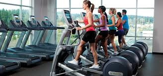
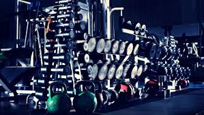
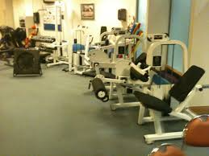

We have a range of equipment to fit all needs including cardio machines, strength machines, a free weights area, fitness studios and a boxing gym with heavy bags, speed balls and battle ropes.
Cardio

If your goal is to improve your general fitness, which will make everyday activities easier and improve your overall health, you're spoilt for choice at Bintang. Our range of cardio equipment, including treadmills, cross trainers, stair climbers, steppers, exercise bikes and rowing machines, will improve your endurance and stamina.
Free Weights

If your goal is to build muscle, our large range of free weight equipment will help you increase muscle mass in a safe and efficient way. From dumbbells up to 50kg, weights benches and squat racks, to plate-loaded equipment your fitness will go from strength to strength
Fixed Resistance Weights

Fixed-weight machines are a great place to start weight training before you’ve developed the skills required for training with free weights.
For an upper body work-out, try the chest press, shoulder press, bicep curls and lateral pull down machines. Or train your entire body with leg presses, ab machines, multi-gym stations, hip abductors and much, much more.